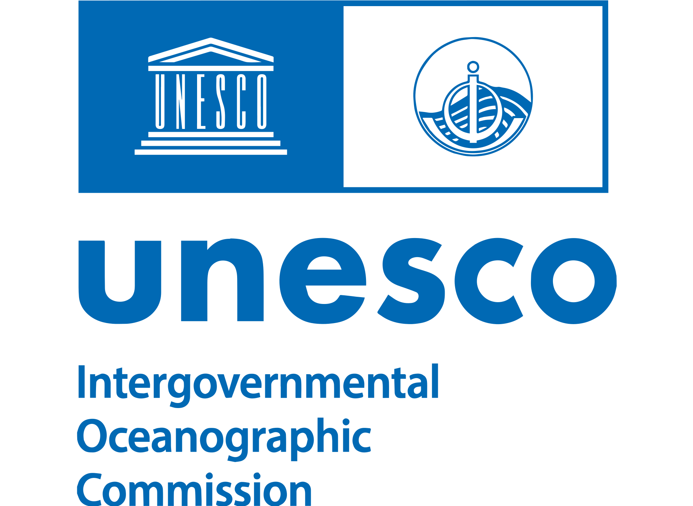

World Ocean Atlas 2023 — Salinity
NOAA NCEI · Global objectively analysed salinity fields…
One direction: the IOC portal (Inter, digital blue #0077D4, white header, no black utility bar).
The new variations keep that chrome and restore what worked in the current UI — rounded type pills and
record types marked with a quiet tinted badge — using UNESCO dataviz colours instead of the old teal set.
Chrome and logo stay UNESCO digital / toolkit. Type colour (pills and badges) uses the design-system dataviz pair + alert tint, so dataset / literature / organisation stay scannable without leaving the identity.
From the current app: the pill filter bar, and type badges with a tinted background rather than uppercase blue labels. Those two cues make a results list readable at a glance.
Current ODIS — pills and tinted badges

Faceted search over ODIS metadata records
NOAA NCEI · Global objectively analysed salinity fields…
Ocean Science · Satellite SSS retrievals…
Institutional chrome only: white header, 3px blue rule, square chips, uppercase type labels with no fill. Kept as the reference. The three variations below add the current app’s type language on top of this.
Proposal 1 — baseline
Global objectively analysed salinity fields at standard depth levels, 1955–2022 climatology.
Review of satellite SSS retrievals and in situ validation in the North Atlantic.
Same header and search. Type filters become the current rounded pills (ink fill when selected). Each result gets a lowercase badge on a UNESCO alert tint — the same pattern as today, retinted. Cards and search pick up a modest 8px radius so it feels a step newer than the Drupal squares, without a new colour story.
Variation — soft pills
Global objectively analysed salinity fields at standard depth levels, 1955–2022 climatology.
Temperature and salinity profiles from the global Argo array, delayed-mode quality controlled.
Review of satellite SSS retrievals and in situ validation in the North Atlantic.
IODE programme of the IOC, coordinating ocean data centres and associated networks.
Pills wear the type tint at rest, so the filter bar itself is the legend. Selected state fills with the type colour (or digital blue for “All”). Facet rows get a matching dot. Stronger scanning, still inside the UNESCO dataviz set.
Variation — colour-coded pills
Global objectively analysed salinity fields at standard depth levels, 1955–2022 climatology.
Review of satellite SSS retrievals and in situ validation in the North Atlantic.
IODE programme of the IOC, coordinating ocean data centres.
Training course on quality control of in situ salinity observations.
Colour-coded pills plus a 6px type-tint rail on each card, badge sitting on the same line as the title. The list becomes a legend you can skim. Still UNESCO tints only — no extra palette.
Variation — tinted cards
Global objectively analysed salinity fields at standard depth levels, 1955–2022 climatology.
Temperature and salinity profiles from the global Argo array, delayed-mode quality controlled.
Review of satellite SSS retrievals and in situ validation in the North Atlantic.
IODE programme of the IOC, coordinating ocean data centres and associated networks.
Safest mix: IOC header, current interaction model, UNESCO tints. If you want “same tool, new clothes,” this is it.
Use if the type filter should teach the colour system. A bit louder; still on-brand.
Use if the results list should feel less like a Drupal catalog. Rails + inline badges are the extra interest.
| 1 Portal | Soft pills | Colour pills | Tinted cards | |
|---|---|---|---|---|
| Chrome | White header, 3px #0077D4 rule, Inter, dark footer |
|||
| Type filters | Square chips | Rounded pills, ink when on | Pills tinted by type | Pills tinted by type |
| Type on cards | Uppercase label, no fill | Lowercase tinted badge | Lowercase tinted badge | Badge + 6px tint rail |
| Corners | Square | 8px | 8px | 10px |
app.css / TypePillBar / TypeBadge next.